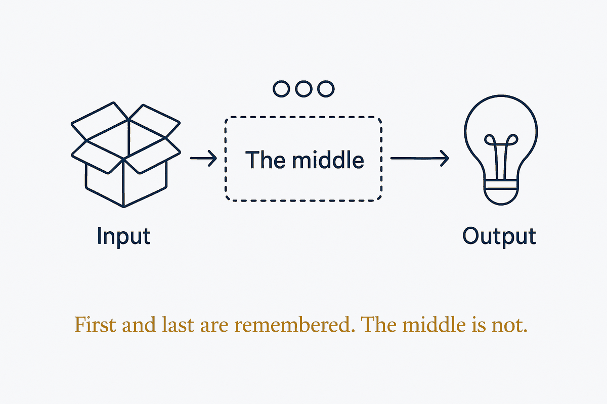

First and last are remembered; the middle is not. It holds for people and for models — so never bury what matters in the centre of a long context.

Free-recall experiments established it in 1966 and the shape has not moved since: items at the start of a sequence are stored more efficiently in long-term memory, items at the end are still in working memory, and the material in between is recalled worst. Primacy and recency are not quirks — they are the reliable structure of how sequences are retained.
The same curve shows up in long model contexts, which is the part worth acting on. Recall degrades in the middle of a long prompt: instructions buried at position four hundred of eight hundred lines compete with everything around them and lose. This is usually diagnosed as the model being careless, and it is closer to a property of attention over long sequences — the same property the 1966 experiment measured in people.
So the practical rule is about placement, not volume. Put the instruction that must not be missed at the top or the bottom, never in the middle of a long file. Repeat the load-bearing constraint at the end of a long brief rather than trusting its first appearance. When a rules file grows past the point where you can see it all, treat the middle as the weakest position and move accordingly.
The deeper implication is an argument against length itself. If the middle is structurally disadvantaged, then a long context is not simply a large context — it is a context with a soft centre. Cutting a small, well-ordered working set from a large structure is not a compromise forced by token limits; it is how you avoid putting anything in the position where it will be lost.